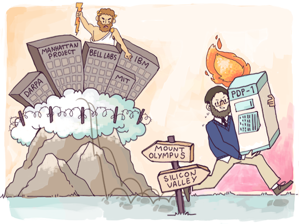

Changer de perspective
Si l’on sous-estime l’importance grandissante du logiciel, c’est principalement pour quatre raisons. Trois d’entre elles sont déjà bien connues et ont joué un rôle lors des précédentes révolutions technologiques mais la quatrième est spécifique au logiciel. Tout d’abord et comme l’a constaté le prospectiviste Roy Amara1 : « On a tendance à surestimer l’impact d’une technologie à court terme et à le sous-estimer à long terme. » En clair, un changement technologique prend du temps à s’imposer mais une fois que le pli est pris, la technologie nouvelle s’impose partout de manière exponentielle ; et ceci d’autant plus que l’être humain ne sait pas toujours prendre la bonne décision face à des choix inter-temporels.
C’est exactement ce qui s’est passé avec le logiciel : dans les années 1995-2000, tout le monde pensait que le logiciel changerait tout, ce qui a débouché sur la bulle internet... et son éclatement. Aujourd’hui au contraire, la plupart des idées qui semblaient folles dans les années 2000 font maintenant partie de notre quotidien. Se faire livrer chez soi des courses commandées en ligne, par exemple. C’est le genre de choses qui n’impressionne plus personne : le logiciel est partout. L’effet de la nouveauté s’estompe peu à peu, et l’on voit apparaître des effets dont l’amplitude était insoupçonnée. Le logiciel s’est enraciné définitivement partout.
La deuxième raison est que le logiciel est passé de ce que l’historienne de l’économie Carlota Perez appelle la phase d’installation à la phase de déploiement. Dans la première phase, le logiciel s’est immiscé dans les infrastructures techniques telles que les systèmes d’exploitation ou les protocoles de réseaux, et dans la deuxième phase, le logiciel a permis des applications grand public, à l’image des réseaux sociaux, des services de VTC, des livres électroniques, etc.
Dans son ouvrage, qui fait référence en matière d’histoire des technologies2, Carlota Perez démontre que le passage de la phase d’installation à la phase de déploiement a généré une période de transition et d’adaptation pour toutes les technologies et ce depuis l’apparition de la machine à vapeur. Durant cette période de transition, l’attention des acteurs en présence est occupée par des scandales financiers, des guerres de chapelles mais également des questions existentielles quant à l’avenir même de la société. Cette anxiété monopolise les esprits et des changements profonds peuvent s’opérer sans que personne ne les perçoive.
La troisième raison est que le logiciel s’est en grande partie imposé dans la plus grande discrétion. A première vue, les recherches sur la génomique relèvent de la biologie et celles en nanotechnologie de la physique. Le mouvement des makers, ces passionnés du do-it-yourself coopératif qui se délectent des imprimantes 3D et des drones, semble relever du bricolage industriel. Pourtant, si l’on creuse davantage, on s’aperçoit qu’à chaque fois les perspectives ouvertes par ces nouveaux domaines sont toutes le fait de l’arrivée du logiciel plus que de découvertes fondamentales dans ces différents champs. C’est l’utilisation de l’informatique qui a permis de faire baisser massivement le coût de séquençage du génome, bien plus que les avancées en chimie analytique. En matière de produits financiers, les crédits et les assurances low-cost ne sont en réalité que le fruit de la généralisation du logiciel dans l’industrie financière. Si le thermostat Nest permet de faire des économies d’énergie, ce n’est pas parce qu’il profite de découvertes en thermodynamique mais bien en utilisant de façon innovante des algorithmes de machine learning. Ce sont d’ailleurs les perspectives ouvertes par cette approche nouvelle du logiciel qui ont poussé Google, qui, au passage, est elle-même une entreprise logiciel, à dépenser plus de trois milliards de dollars pour mettre la main sur Nest, alors qu’en apparence cette entreprise n’a rien inventé de révolutionnaire.
Ces trois raisons qui nous font sous-estimer l’importance du logiciel n’ont rien de nouveau et se retrouvent également dans l’émergence des précédentes révolutions technologiques. Les Etats-Unis du XIXe siècle ont vu le développement du chemin de fer, et de nombreux troubles ont accompagné ce bouleversement. La transition fut marquée par la guerre de Sécession, et par de nombreux changements induits en réalité par l’arrivée du rail : le début de l’urbanisation, les premières chaînes de magasins et la consommation de viande.
La quatrième raison qui nous fait sous-estimer l’importance du logiciel lui est spécifique : en grande partie, la révolution est portée par de jeunes insolents plus que par des adultes3.
C’est pour cela que nous disions dans notre chapitre précédent que le logiciel dévore le monde : cette révolution est menée par des jeunes qui agissent sans réel contrôle des adultes (bien que de nombreux adultes y participent). Et cela engendre des effets surprenants.
Aujourd’hui, partout dans le monde et comme souvent dans l’Histoire, ce sont les générations les plus âgées qui dirigent ou contrôlent les institutions clés. Ces dirigeants bien en place sont mieux organisés et politiquement plus influents. Citons l’exemple de l’AARP4 qui est certainement le lobby le plus puissant aux Etats-Unis. Dans le monde tel qu’il est organisé aujourd’hui, les générations les plus âgées hypothèquent sans hésiter l’avenir aux dépends des jeunes, déjà nés ou même à naître.
Cependant, contrairement à la plupart des périodes de l’Histoire, les jeunes générations d’aujourd’hui n’en sont plus réduites soit à « attendre leur tour », soit à se confronter à un ordre social qui se ligue systématiquement contre elles. En agissant aux marges du système avec une mentalité de hacker – qui consiste à résoudre les problèmes en se fondant sur des cycles courts d’essais-erreurs et sur le mode de l’improvisation créative – ils peuvent mettre le logiciel à profit pour s’organiser autrement et créer des écosystèmes nouveaux. Au passage, cette nouvelle génération révolutionne les organisations politiques et économiques existantes et crée ainsi un nouvel ordre social parallèle. Au lieu de se battre les uns contre les autres pour prendre le contrôle d’institutions centenaires et patinées par les conflits de générations, tous ces jeunes créent de nouvelles institutions fondées sur le logiciel et de nouvelles richesses. Toutes ces nouvelles institutions, improvisées mais hautement efficaces, n’arrêtent pas de surgir de nulle part et commencent à prendre une importance politique et économique non négligeable. Plus important : tout cela se fait de façon quasi-invisible. A l’inverse de la contre-culture des jeunes des années 1960 par exemple, la culture des jeunes d’aujourd’hui se diffuse grâce à des applications de messagerie instantanée et de partage de photos. En apparence, tout cela n’a rien d’une force politique en marche. Cette culture émergente est en outre délibérément plus attirée par le business que par les combats idéologiques. En 2011 déjà, un article du New York Times relevait cette particularité – presque à contrecœur d’ailleurs – en titrant : « Génération Business »5 pour désigner cette culture montante.
C’est ce qui explique que la jeune génération d’aujourd’hui est bien plus efficiente que celle de ses parents. Elle incarne ce que Jane Jacobs6 a décrit comme « l’éthique du commerce », un système de valeurs qui considère l’économie avec pragmatisme et accepte volontiers le pluralisme par opposition à « l’éthique du protecteur », plus encline au manichéisme et aux idéologies politiques conservatrices.
Chris Dixon7 résume parfaitement ces luttes de pouvoir : ce que les gens les plus malins font aujourd’hui pour occuper leur week-end, le reste de la population le fera au travail d’ici dix ans.
En pratique, le résultat de ce mouvement est surprenant : ce qui autrefois aurait généré un conflit de générations tout à fait classique fondé sur une confrontation politique se joue en réalité sur le terrain économique. Aussi surprenant que cela puisse paraître, toutes ces innovations permises par le logiciel n’entraînent que peu d’affrontements politiques. Des mouvements tels que #Occupy semblent bien ternes au regard de leurs équivalents des années 1960, mais surtout ils ne sont rien comparés aux changements économiques engendrés par cette jeune génération.
Tout cela ne va pas sans quelques conséquences sociales collatérales. Le logiciel génère des changements importants dans le mode de vie des classes moyennes, dont on sait qu’elles constituent le socle de la société de consommation qui est actuellement la nôtre. Dans sa forme la plus caractéristique, la vie des classes moyennes se déroule comme un film au scénario bien huilé. On commence par être enfermé pendant une dizaine d’années dans des écoles qui font entrer tout le monde dans le même moule, puis on continue avec trois ans consacrés à l’apprentissage d’un métier qui débouche sur un emploi à vie qui offrira un avancement à l’ancienneté.
Dès les années 1970, la machine a commencé à se gripper, même pour la minorité privilégiée (blanche, masculine, hétérosexuelle, valide, née dans le pays) à qui elle bénéficiait. Mais cette organisation sociale prévaut encore aujourd’hui. Contrairement à la société numérique et à ses ordinateurs, la société de consommation est celle de la paperasserie : tout un processus bureaucratique qui utilise des technologies dépassées comme l’argent et le papier. Contrairement à la mentalité de hacker, faite d’adaptabilité et de créativité, le scénario traditionnel repose sur des classements, des diplômes, des qualifications, des permissions et des réglementations. Au lieu de chercher à devenir rapidement financièrement autonome, l’ordre traditionnel est celui de l’endettement à vie.
Tout d’abord et comme l’a constaté le prospectiviste Roy Amara1 : « On a tendance à surestimer l’impact d’une technologie à court terme et à le sous-estimer à long terme. » En clair, un changement technologique prend du temps à s’imposer mais une fois que le pli est pris, la technologie nouvelle s’impose partout de manière exponentielle ; et ceci d’autant plus que l’être humain ne sait pas toujours prendre la bonne décision face à des choix inter-temporels.
C’est exactement ce qui s’est passé avec le logiciel : dans les années 1995-2000, tout le monde pensait que le logiciel changerait tout, ce qui a débouché sur la bulle internet... et son éclatement. Aujourd’hui au contraire, la plupart des idées qui semblaient folles dans les années 2000 font maintenant partie de notre quotidien. Se faire livrer chez soi des courses commandées en ligne, par exemple. C’est le genre de choses qui n’impressionne plus personne : le logiciel est partout. L’effet de la nouveauté s’estompe peu à peu, et l’on voit apparaître des effets dont l’amplitude était insoupçonnée. Le logiciel s’est enraciné définitivement partout.
La deuxième raison est que le logiciel est passé de ce que l’historienne de l’économie Carlota Perez appelle la phase d’installation à la phase de déploiement. Dans la première phase, le logiciel s’est immiscé dans les infrastructures techniques telles que les systèmes d’exploitation ou les protocoles de réseaux, et dans la deuxième phase, le logiciel a permis des applications grand public, à l’image des réseaux sociaux, des services de VTC, des livres électroniques, etc.
Dans son ouvrage, qui fait référence en matière d’histoire des technologies2, Carlota Perez démontre que le passage de la phase d’installation à la phase de déploiement a généré une période de transition et d’adaptation pour toutes les technologies et ce depuis l’apparition de la machine à vapeur. Durant cette période de transition, l’attention des acteurs en présence est occupée par des scandales financiers, des guerres de chapelles mais également des questions existentielles quant à l’avenir même de la société. Cette anxiété monopolise les esprits et des changements profonds peuvent s’opérer sans que personne ne les perçoive.
La troisième raison est que le logiciel s’est en grande partie imposé dans la plus grande discrétion. A première vue, les recherches sur la génomique relèvent de la biologie et celles en nanotechnologie de la physique. Le mouvement des makers, ces passionnés du do-it-yourself coopératif qui se délectent des imprimantes 3D et des drones, semble relever du bricolage industriel. Pourtant, si l’on creuse davantage, on s’aperçoit qu’à chaque fois les perspectives ouvertes par ces nouveaux domaines sont toutes le fait de l’arrivée du logiciel plus que de découvertes fondamentales dans ces différents champs. C’est l’utilisation de l’informatique qui a permis de faire baisser massivement le coût de séquençage du génome, bien plus que les avancées en chimie analytique. En matière de produits financiers, les crédits et les assurances low-cost ne sont en réalité que le fruit de la généralisation du logiciel dans l’industrie financière. Si le thermostat Nest permet de faire des économies d’énergie, ce n’est pas parce qu’il profite de découvertes en thermodynamique mais bien en utilisant de façon innovante des algorithmes de machine learning. Ce sont d’ailleurs les perspectives ouvertes par cette approche nouvelle du logiciel qui ont poussé Google, qui, au passage, est elle-même une entreprise logiciel, à dépenser plus de trois milliards de dollars pour mettre la main sur Nest, alors qu’en apparence cette entreprise n’a rien inventé de révolutionnaire.
Ces trois raisons qui nous font sous-estimer l’importance du logiciel n’ont rien de nouveau et se retrouvent également dans l’émergence des précédentes révolutions technologiques. Les Etats-Unis du XIXe siècle ont vu le développement du chemin de fer, et de nombreux troubles ont accompagné ce bouleversement. La transition fut marquée par la guerre de Sécession, et par de nombreux changements induits en réalité par l’arrivée du rail : le début de l’urbanisation, les premières chaînes de magasins et la consommation de viande.
La quatrième raison qui nous fait sous-estimer l’importance du logiciel lui est spécifique : en grande partie, la révolution est portée par de jeunes insolents plus que par des adultes3.
C’est pour cela que nous disions dans notre chapitre précédent que le logiciel dévore le monde : cette révolution est menée par des jeunes qui agissent sans réel contrôle des adultes (bien que de nombreux adultes y participent). Et cela engendre des effets surprenants.
Aujourd’hui, partout dans le monde et comme souvent dans l’Histoire, ce sont les générations les plus âgées qui dirigent ou contrôlent les institutions clés. Ces dirigeants bien en place sont mieux organisés et politiquement plus influents. Citons l’exemple de l’AARP4 qui est certainement le lobby le plus puissant aux Etats-Unis. Dans le monde tel qu’il est organisé aujourd’hui, les générations les plus âgées hypothèquent sans hésiter l’avenir aux dépends des jeunes, déjà nés ou même à naître.
Cependant, contrairement à la plupart des périodes de l’Histoire, les jeunes générations d’aujourd’hui n’en sont plus réduites soit à « attendre leur tour », soit à se confronter à un ordre social qui se ligue systématiquement contre elles. En agissant aux marges du système avec une mentalité de hacker – qui consiste à résoudre les problèmes en se fondant sur des cycles courts d’essais-erreurs et sur le mode de l’improvisation créative – ils peuvent mettre le logiciel à profit pour s’organiser autrement et créer des écosystèmes nouveaux. Au passage, cette nouvelle génération révolutionne les organisations politiques et économiques existantes et crée ainsi un nouvel ordre social parallèle. Au lieu de se battre les uns contre les autres pour prendre le contrôle d’institutions centenaires et patinées par les conflits de générations, tous ces jeunes créent de nouvelles institutions fondées sur le logiciel et de nouvelles richesses. Toutes ces nouvelles institutions, improvisées mais hautement efficaces, n’arrêtent pas de surgir de nulle part et commencent à prendre une importance politique et économique non négligeable. Plus important : tout cela se fait de façon quasi-invisible. A l’inverse de la contre-culture des jeunes des années 1960 par exemple, la culture des jeunes d’aujourd’hui se diffuse grâce à des applications de messagerie instantanée et de partage de photos. En apparence, tout cela n’a rien d’une force politique en marche. Cette culture émergente est en outre délibérément plus attirée par le business que par les combats idéologiques. En 2011 déjà, un article du New York Times relevait cette particularité – presque à contrecœur d’ailleurs – en titrant : « Génération Business »5 pour désigner cette culture montante.
C’est ce qui explique que la jeune génération d’aujourd’hui est bien plus efficiente que celle de ses parents. Elle incarne ce que Jane Jacobs6 a décrit comme « l’éthique du commerce », un système de valeurs qui considère l’économie avec pragmatisme et accepte volontiers le pluralisme par opposition à « l’éthique du protecteur », plus encline au manichéisme et aux idéologies politiques conservatrices.
Chris Dixon7 résume parfaitement ces luttes de pouvoir : ce que les gens les plus malins font aujourd’hui pour occuper leur week-end, le reste de la population le fera au travail d’ici dix ans.
En pratique, le résultat de ce mouvement est surprenant : ce qui autrefois aurait généré un conflit de générations tout à fait classique fondé sur une confrontation politique se joue en réalité sur le terrain économique. Aussi surprenant que cela puisse paraître, toutes ces innovations permises par le logiciel n’entraînent que peu d’affrontements politiques. Des mouvements tels que #Occupy semblent bien ternes au regard de leurs équivalents des années 1960, mais surtout ils ne sont rien comparés aux changements économiques engendrés par cette jeune génération.
Tout cela ne va pas sans quelques conséquences sociales collatérales. Le logiciel génère des changements importants dans le mode de vie des classes moyennes, dont on sait qu’elles constituent le socle de la société de consommation qui est actuellement la nôtre. Dans sa forme la plus caractéristique, la vie des classes moyennes se déroule comme un film au scénario bien huilé. On commence par être enfermé pendant une dizaine d’années dans des écoles qui font entrer tout le monde dans le même moule, puis on continue avec trois ans consacrés à l’apprentissage d’un métier qui débouche sur un emploi à vie qui offrira un avancement à l’ancienneté.
Dès les années 1970, la machine a commencé à se gripper, même pour la minorité privilégiée (blanche, masculine, hétérosexuelle, valide, née dans le pays) à qui elle bénéficiait. Mais cette organisation sociale prévaut encore aujourd’hui. Contrairement à la société numérique et à ses ordinateurs, la société de consommation est celle de la paperasserie : tout un processus bureaucratique qui utilise des technologies dépassées comme l’argent et le papier. Contrairement à la mentalité de hacker, faite d’adaptabilité et de créativité, le scénario traditionnel repose sur des classements, des diplômes, des qualifications, des permissions et des réglementations. Au lieu de chercher à devenir rapidement financièrement autonome, l’ordre traditionnel est celui de l’endettement à vie.

{kind=link}

Face à l’émergence du logiciel, on a vu ressurgir la bonne vieille querelle des anciens et des modernes : faut-il faire table rase du passé au risque d’abandonner de coûteux investissements pour rejoindre la révolution en marche, ou bien défendre le statu quo le plus longtemps possible ? Bien entendu, c’est une décision plus facile à prendre quand on est jeune et qu’on a peu à perdre, même si beaucoup de jeunes décident de rester fidèles au système de leurs parents. Ils appartiennent à ce que David Brooke appelle des Enfants de l’organisation (en référence au livre de William Whyte L’Homme de l’organisation, paru en 1956) : ce sont ceux qui parient sur la société industrielle (ou qui laissent leurs parents faire ce pari à leur place9). Pour les adultes de plus de trente ans, en particulier si vous avez une famille à charge ou que vous êtes déjà endetté, la décision est loin d’être facile à prendre. En revanche, pour peu qu’on ait l’esprit prométhéen et l’envie féroce d’innover, on peut s’y mettre à tout âge. Ceux qui hésitent risquent de laisser passer les opportunités les unes après les autres. Qu’on soit jeune ou vieux, quand on n’arrive pas à adopter l’esprit prométhéen on finit par avoir ce que nous appelons un esprit pastoral : on passe son temps à pleurer le paradis perdu. C’est le cas de tous ceux qui rêvent encore d’une version moderne du rêve américain idéalisé des années 1950, avec des voitures volantes et des combinaisons d’hommes-fusées. Pourquoi et comment passer à l’esprit prométhéen, malgré son inconfort et ses difficultés, voilà le thème central de ce premier opus. C’est ce que nous appelons « breaking smart ». Dans les pays développés, tout le monde, ou presque, peut s’y mettre, et dans les pays émergents nouvellement connectés à Internet, un nombre croissant de personnes peut le faire. C’est parce que vous la prendrez par vous-même que votre décision changera les choses. Des historiens comme Daron Acemoglu, James Robinson ou Joseph Tainter ont déjà démontré que c’est la démarche mise en œuvre pour résoudre un problème plutôt que le problème en soi qui fait qu’on gagne ou qu’on perd. Si chacun de nous change de perspective, alors les entreprises et la société toute entière suivront, et de fil en aiguille c’est notre civilisation qui suivra... ou pas. Pour assurer notre avenir, il faut que de plus en plus de gens adoptent l’esprit prométhéen. Heureusement, c’est exactement ce qui arrive.Précédent | Remonter | Suivant
[1] Roy Amara (1925-2007) était un chercheur de l’université de Stanford. Il a également été président de l’Institute for the future, un think tank californien (ndt). [2] Carlota Perez, Technological Revolutions and Financial Capital: The Dynamics of Bubbles and Golden Ages, Edward Edgar Publishing, 2003. [3] Quoique certaines études permettent d’en douter. Ceci dit, parce que le logiciel est une technologie plus facile d’accès et moins coûteuse que les autres, il n’en reste pas moins vrai qu’on peut démarrer sa vie d’entrepreneur plus jeune que du temps des précédentes révolutions technologiques. Par comparaison, des « barons-voleurs » tels que John D. Rockefeller ou Cornelius Vanderbilt ont créé ce qui deviendrait leur empire à un âge plus avancé de la vie. [4] L’AARP est un lobby qui défend les intérêts des retraités américains. A côté de ses activités politiques sans but lucratif, l’AARP est aussi une caisse de retraite (ndt). [5] Lire l’article original en ligne : http://www.nytimes.com/2011/11/13/opinion/sunday/the-entrepreneurial-genera- tion.html?_r=0 [6] Jane Jacobs (1916-2006) est une militante écologiste connue pour ses recherches en urbanisme. Les deux expressions employées ici sont extraites d’un de ses derniers ouvrages : Systems of Survival: A Dialogue on the Moral Foun- dations of Commerce and Politics, Random House, 1992 (ndt). [7] Chris Dixon est l’un des associés du fonds de capital-risque Andreessen-Horowitz, qui est à l’origine du présent essai (ndt). [8] Jeremy Greenwood and Mehmet Yorukoglu, 1974, Carnegie-Rochester Conference Series on Public Policy, 1997. [9] Voir le livre de Amy Chua : L’hymne de bataille de la mère tigre, Gallimard, Paris, 2011 (pour l’édition française).